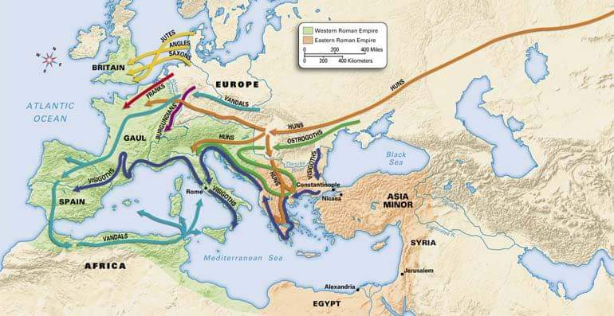
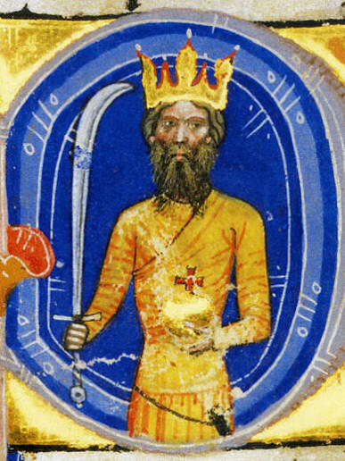
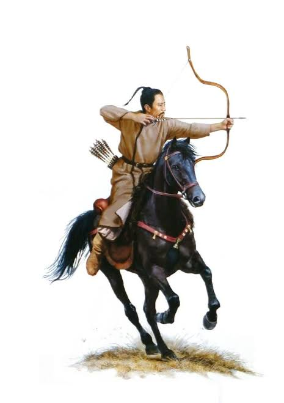

Origins
Explore theories surrounding the origins of the Huns and their migrations across Eurasia.

Attila the Hun
Learn about the most famous ruler of the Huns and his impact on history.

Warfare
Discover Hun military tactics, horse archery, and battlefield mobility.

Artifacts
Examine archaeological discoveries and surviving objects linked to Hun culture.